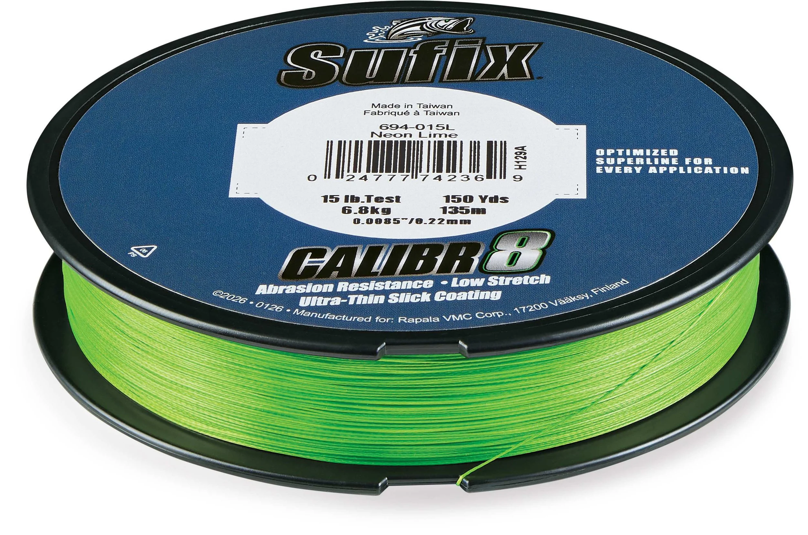

Sufix Calibr8 15 lb
Diameter chart, reel capacity & backing guide

This Calibr8 guide covers one source-verified offering: 15 lb Neon Lime, SKU 694-015L, in a nominal 150-yard spool. Manufacturer-owned launch photos show the exact strength, diameter, package length and SKU. Other Calibr8 strengths, colors and lengths are not included.
- Construction
- 8-carrier braid; IZANAS-branded fiber and ultra-thin slick coating identified on the pictured packaging
- Listed strengths
- 15 lb
- Line type
- Braid main line
Is this 15 lb Calibr8 offering suitable?
Consider the verified 15 lb offering when braid will be your reel mainline and the planned working length fits the nominal 150-yard supply. Rapala describes lighter Calibr8 tests as oriented toward spinning use, but rod rating, cover, lure and expected runs still determine whether this strength fits your fishing.
How much Calibr8 will fit?
Calculated estimates, not measured fills. Stop at the reel manufacturer's fill level even if some line remains.
Sufix Calibr8 diameter chart
One approved row only: 15 lb Neon Lime, 694-015L. Both diameter units are printed on the manufacturer label and agree within normal printed rounding. The 5 lb mono-equivalent label is not breaking strength.
| Strength | Inches | mm | Spools (yd) |
|---|---|---|---|
| 0.0085 | 0.220 | 150 |
Choosing your Calibr8 strength
The verified offering is 15 lb Calibr8, SKU 694-015L. Its manufacturer label prints 0.0085 inch and 0.22 mm; choose that exact line diameter for capacity planning.
The box also says 5 lb mono equivalent. That is a diameter comparison, not a 5 lb Calibr8 strength and not a separate catalog row.
Other strengths are not approved by this source review. Do not scale from the 15 lb row or borrow the diameter of Sufix 832, Revolve or a regional Calibr8 formulation.
Source-label review, not a ReelCalc hands-on test or a measured fill. Manufacturer launch photography establishes the pictured specification, not present stock or real-world breaking strength.
Want a guided recommendation?
Continue in the Setup WizardSame pound test, different diameters
At your selected strength
Loading diameter comparisons...
What changes with another line?
Nearby diameters in the line database
| Line | Strength | Inches | Difference |
|---|---|---|---|
| Loading line database... | |||
Backing, working line & leaders
Plan around the identified spool
Use the nominal 150-yard supply for 694-015L and leave reserve for knots, trimming and expected fish runs. The pictured spool does not verify 300-yard packages.
Keep the backing join below deployment
Use backing only to occupy unused spool volume. A working braid section must still cover the line you expect to cast or fish; the connection should remain below that section.
Separate braid from any leader
Calibr8 is the reel mainline in this setup. A separately chosen terminal leader has its own diameter and purpose and does not replace the braid diameter in a mainline capacity estimate.
Use appropriate loading tension
Follow the reel manufacturer's braid attachment and fill guidance, and avoid loose initial wraps. The package's coating and abrasion claims do not establish a measured casting or durability advantage here.
How Much Fits on These Reels?
Estimated full-spool capacity for the Calibr8 strength selected above, with no backing. These are calculated examples, not physical tests or recommendations for every pairing.
Loading capacity estimates...
Calibr8 questions, answered
Which Calibr8 SKU does this guide cover?
Only 694-015L: 15 lb Neon Lime with the manufacturer's nominal 150-yard label. The exact code and specifications are readable on the manufacturer-owned launch photograph.
Why are the other Calibr8 strengths missing?
An exact primary strength, diameter and package source was not located for them. Retailer tables and menus are not used to extend this single-SKU verification.
Does 5 lb on the box mean this is a 5 lb line?
No. The 5 lb figure is labeled mono equivalent and refers to a diameter comparison. The line itself is labeled 15 lb Test.
Are 150 yards and 135 meters exact equivalents?
No. The manufacturer prints both as nominal package labels, but 150 yards equals 137.16 meters mathematically. This North American launch SKU is recorded at its printed 150-yard size; the companion 135-meter label is retained as a qualification, not converted into a different yardage or treated as another offering.
Do 0.0085 inch and 0.22 mm conflict?
They are compatible at the displayed precision. Converting 0.0085 inch gives 0.2159 mm, which rounds to 0.22 mm. Both published values are retained rather than pretending that either is a new measurement.
Does the manufacturer roundness graph supply a diameter for every strength?
No. The public graph is not tied to a specific pound test, SKU and retail package, so it cannot verify additional calculator rows.
Specifications & sources
Checked September 13, 2026. Numeric authority is the Rapala VMC-owned package photography, hosted with explicit media-release attribution by Foresight Fishing. The package prints nominal 150 yd / 135 m; this guide uses the printed yard unit, not a conversion of 135 m. No retailer-authored specification table is used.
Calculations use the catalog's listed inch diameters. Published inch and millimeter values may differ slightly because of rounding.
- Rapala VMC Calibr8 spool photograph Primary manufacturer label: exact 694-015L SKU, UPC, 15 lb, Neon Lime, nominal 150 yd / 135 m and 0.0085 inch / 0.22 mm. Visually read from the image; not taken from a retailer table.
- Rapala VMC Calibr8 box photograph Companion manufacturer package repeats the 15 lb diameter and length labels and identifies IZANAS fiber. The 5 lb mono-equivalent marking is not a strength row.
- Manufacturer photo attribution and launch context Foresight Fishing's July 2026 launch coverage explicitly credits all photos as Rapala VMC property used with media-release permission. Article prose is not used as numeric authority.
- Rapala VMC 2026 half-year company announcement Primary corporate release independently identifies Calibr8 as an 8-carrier braid introduced at ICAST 2026. It does not supply a retail numeric matrix.
- Official Sufix testing page Confirms the model name in roundness and microscopy material. Its graph lacks SKU/strength/package binding and is not used to derive any row.